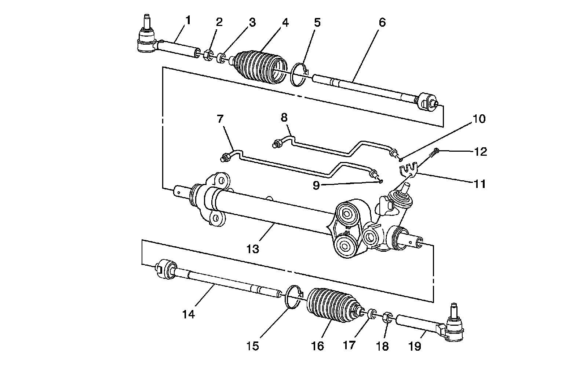

Power Steering Gear Disassembled View (Rack and Pinion)
Power Steering Gear Disassembled View (Rack and Pinion)
Power Steering Gear Disassembled View (Rack and Pinion):

1 - Outer Tie Rod
2 - Hexagon Jam Nut
3 - Tie Rod End Clamp
4 - Rack and Pinion Boot
5 - Boot Clamp
6 - Inner Tie Rod
7 - Cylinder Line - LT
8 - Cylinder Line - RH
9 - O-Ring Seal
10 - O-Ring Seal
11 - Cylinder Line Retaining Plate
12 - External TORX(R) Screw
13 - Rack and Pinion Gear Assembly
14 - Inner Tie Rod
15 - Boot Clamp
16 - Rack and Pinion Boot
17 - Tie Rod End Clamp
18 - Hexagon Jam Nut
19 - Outer Tie Rod